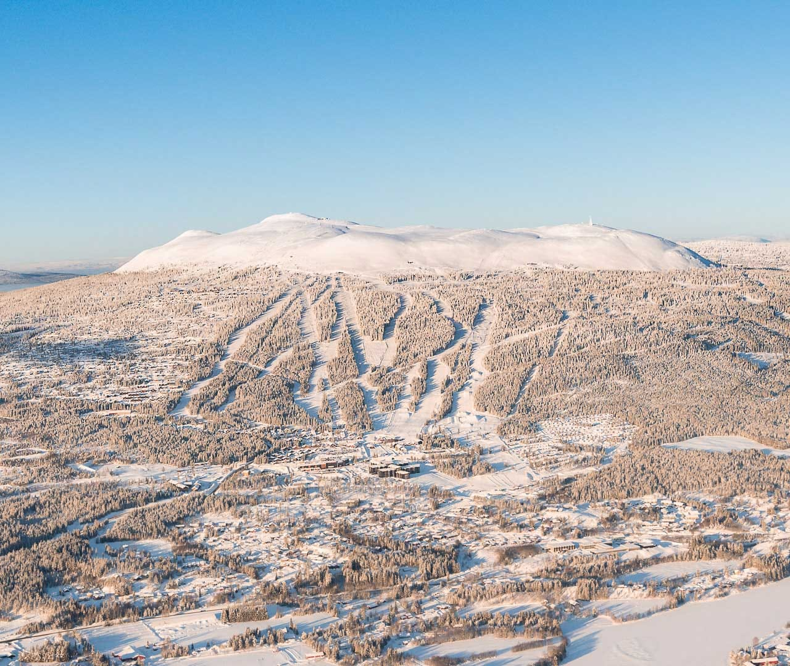
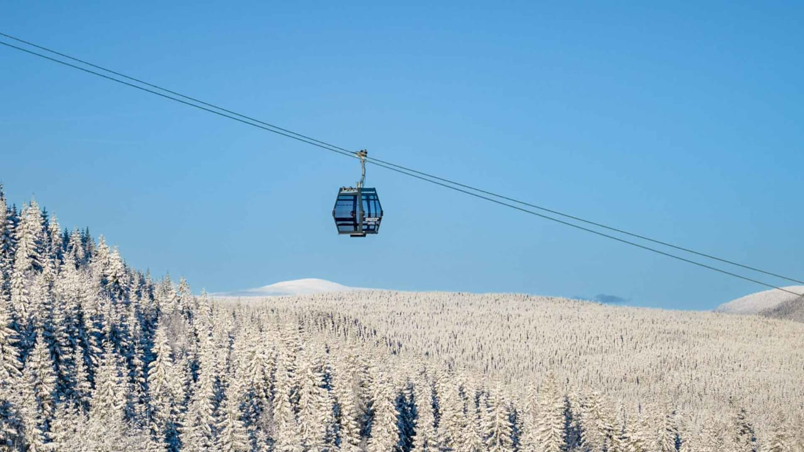
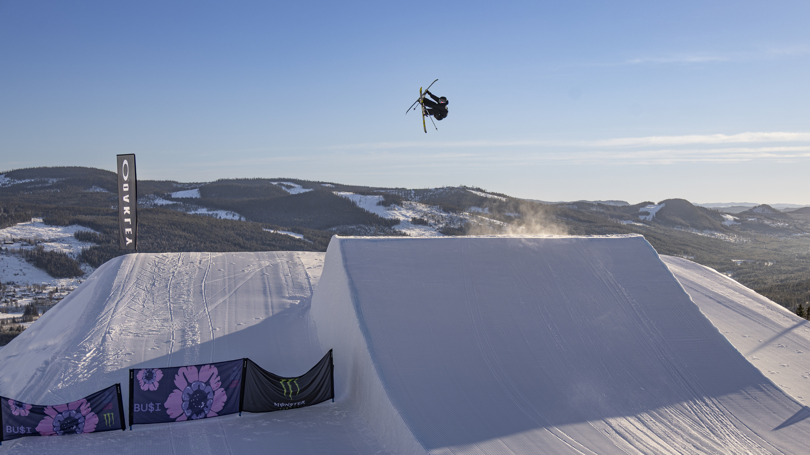
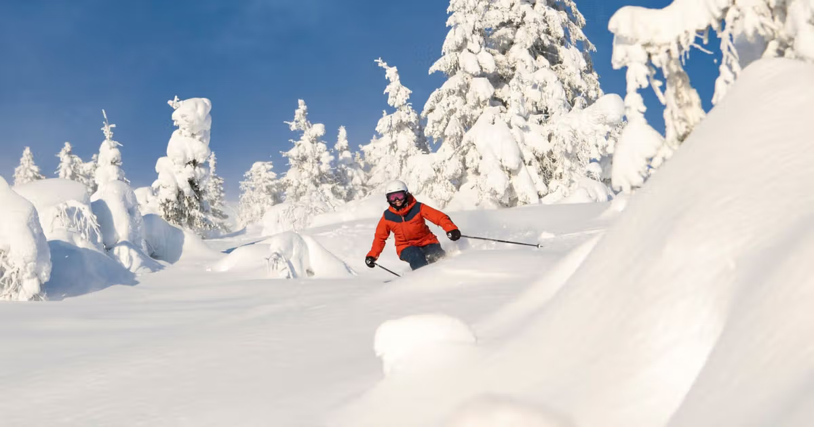
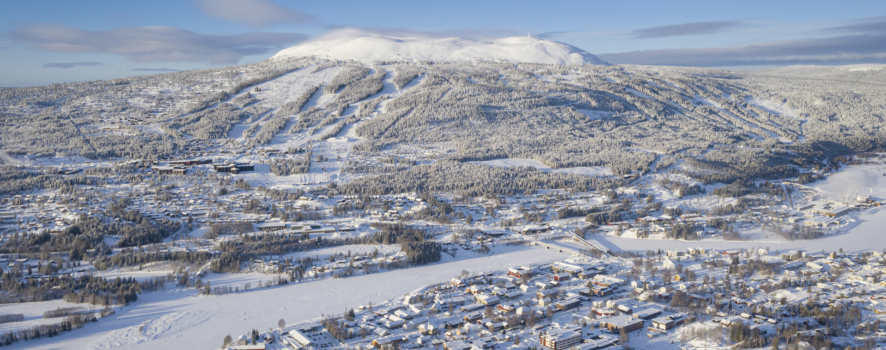

Trysil er Norges største skisted og byr på et variert tilbud for både nybegynnere, familier og erfarne skikjørere. De mange bakkene gjør at alle finner noe som passer sitt nivå, samtidig som det moderne heissystemet sørger for effektiv transport rundt i anlegget.
Trysil er spesielt kjent for sin flotte park. Her finner du hopp, rails og andre elementer som passer både for de som ønsker å prøve park for første gang og for mer erfarne kjørere. Dette gjør Trysil til et av Norges beste reisemål for freestyle-kjøring.
Skiforholdene er som regel svært gode gjennom hele vinteren. Selv om Trysil ofte får noe mindre natursnø enn steder som Hemsedal, veies dette opp av god preparering og et moderne snøproduksjonsanlegg som holder bakkene i topp stand gjennom sesongen.
Trysil tilbyr over 70 kilometer med preparerte løyper og har et av Norges mest moderne heissystemer. Dette gjør at ventetiden i heisene ofte er kort, selv i høysesongen.
Området passer like godt for familier som for erfarne skikjørere. De grønne og blå løypene gjør det enkelt for nybegynnere å lære, mens de røde og svarte løypene byr på større utfordringer for de som ønsker mer fart og spenning.
Samlet sett er Trysil et av Norges mest komplette skianlegg, og derfor gir vi stedet 4 av 5 snøfnugg.
Trysil er Norges største skisenter, og anatkligvis også et av de mest populære, og det av en grunn. Trysil får derfor
❄ ❄ ❄ ❄ ☆ 4/5